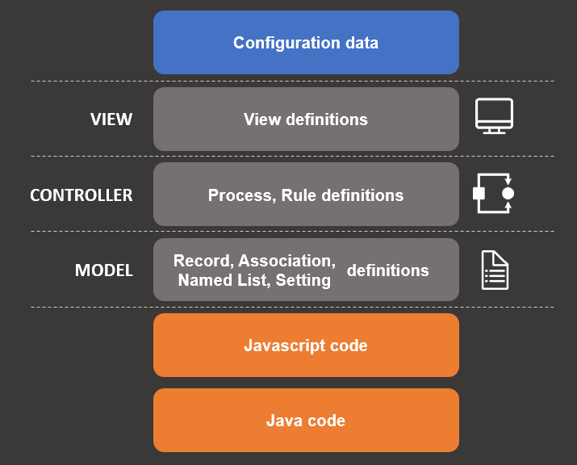

Anatomy of a Digital Service application
The Digital Service application or smart library that you develop is packaged as a smart bundle. The smart bundle contains all the essential elements, which are required to deploy an application in BMC Helix Innovation Studio. This topic explains in detail the anatomy of an application or a smart library.
Smart bundle details
A smart bundle is a Open Service Gateway Initiative (OSGi) JAR file, which may consist of JAVA classes, web files, JSON, and templates.
A bundle consists of the following attributes:
Bundle ID
Version number
Author
Code (for example, Java, JavaScript)
Definitions
Data
Dependencies on other smart bundles
Licensing details
The code for an application development or a library development is packaged and deployed as a bundle. The following image describes the code division and code development personas:

The code for client UI, UI extensions, and server extensions is created by an administrator or a developer. The definitions for an application are created by either a developer or an application business analyst.
A typical smart bundle consists of code for the following sections:
Data and definitions—Set of definitions that can be customized as per the business requirements without modifying the application code.
Data/Definitions
Description
Configuration data
Configures the application behavior through data.
Application data
Consists of data like record instances.
Definitions
Configures application definitions using BMC Helix Innovation Studio, which provides the following features:
Provides a set of visual drag-and-drop designers
Creates and customize application definitions
Change application behavior without coding
This includes the following definitions and their capabilities:
Record definitions: Customize the data model of an application
View definitions: Customizes the UI of an application
Associations: Create or modify associations among record definitions
Named lists: Customize a list of name-value pairs used in a drop-down menu of an application
Processes: Customize the processes related to an application
Rules: Customize the business rules related to an application
Client UI—Client UI is a web application written in JavaScript or is a code for a mobile application that has REST-based interfaces.
UI extensions—UI extensions are reusable client UI extensions that are known as view components (code in JavaScript).
Server extensions— (code in Java)
Deployment package
Applications and libraries are deployed as deployment packages. Deployment packages are deployed by using Maven and the archetype. For more information, see Deploying your Digital Service application for the first time to start working in BMC Helix Innovation Studio.
Comparison between application and library bundles
You can develop an application or a library by using BMC Helix Innovation Studio. An application provides solutions for your business needs. A library is a reusable set of components that can be used to develop an application. For example, a PTO application may include an approval library that provides the elements required to create approval process.
|
Application |
Library |
|
|
Purpose |
Provides a complete set of business ready functionality. |
Provide a reusable building block for building applications. |
|
Target consumer |
Remedy consumer who needs business functionality. |
Remedy consumer, partner, or a software developer. |
|
Application switching |
It is available in the application switcher in the navigation bar of the user interface (UI). |
It is not available in the application switcher in the navigation bar of the UI. |
|
Entry point |
It has an index.html entry point. |
It usually does not has any entry point. All UI entry points are from an application. For example, Approval library. |
Related topics
End-to-end process for developing your Digital Service application